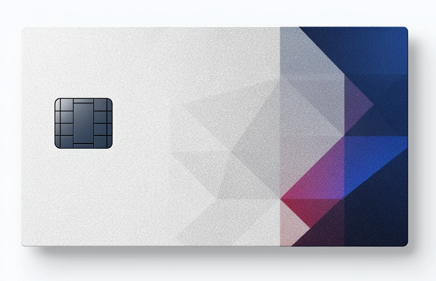

Cashback
Straightforward cashback on everyday categories, with no rotating enrollment calendar to manage.
Included with Aster Checking
Aster Card is the starting point for the Aster ecosystem: clean, dependable, and designed for customers who want a polished everyday card without complexity.
Included with eligible Aster checking, it pairs straightforward rewards with an approachable premium feel, making it ideal for younger professionals and mainstream customers building their banking relationship.

Everyday Benefits
Aster Card is meant to feel immediately useful: an everyday card with cleaner economics, intuitive controls, and enough polish to feel like a step up from standard bank cards.
Straightforward cashback on everyday categories, with no rotating enrollment calendar to manage.
Core travel protections and simple booking value for customers beginning to travel more frequently.
Instant card lock, spend notifications, virtual card controls, and app-first servicing inside Aster.
A quieter, more refined physical card with soft-touch material and a cleaner aesthetic than typical starter products.
Who It’s For
Built for younger professionals, early-career households, and mainstream checking customers looking for a cleaner everyday card with better design and stronger bank backing.
Audience
Younger professionals, salaried households, and new Aster account holders entering the ecosystem.
Positioning
Included with Aster checking. Clean rewards, approachable premium feel, and everyday usability.
Card Role
The everyday tier within Aster: simple, useful, and designed to be the first card in the relationship.
Upward Path
For customers who grow into more travel-intensive usage, Meridian becomes the flagship step up.
Annual Fee
Included with eligible Aster checking relationships.
Lifestyle Categories
Everyday returns across categories like dining, transit, and select subscriptions.
All Other Purchases
A clean base rate for general spend without rotating complexity.
Construction
Ivory finish, Aster blue detailing, and a more tactile material language.
Open Aster checking and begin with a clean, capable everyday card that brings rewards, control, and a more considered consumer banking experience.
Aster is a consumer banking service powered by Commonwealth Bank. Card terms, APR ranges, and rewards program conditions apply.